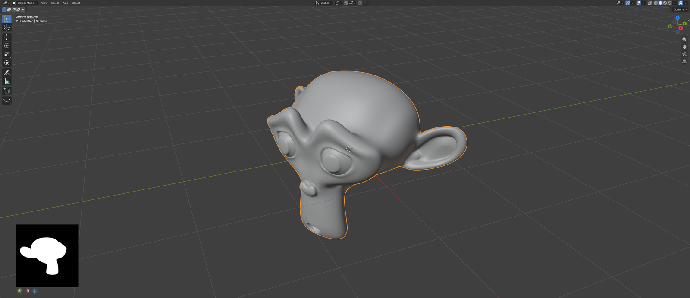
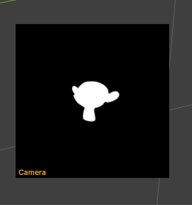
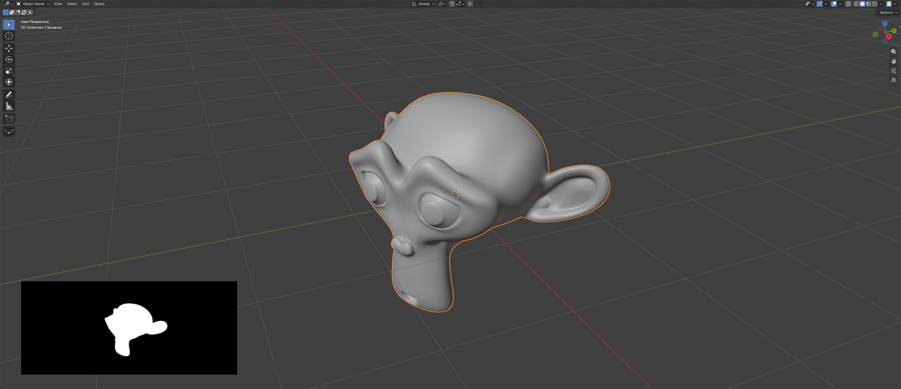
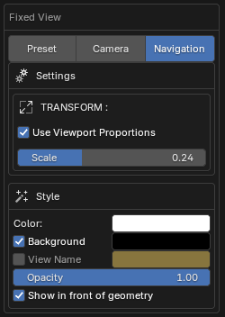
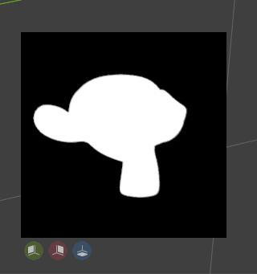
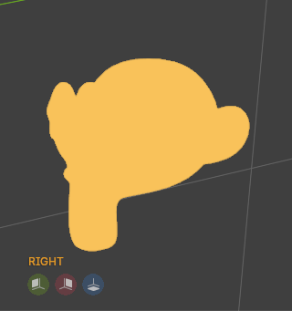

A card in the corner of the viewport that shows the pure shape of your mesh, no lighting, no details. So you know right away whether it reads well.

No extra windows, no renders. One button in the viewport header and you're set.
Front, back, left, right, top and bottom, always framed around your model.
Use the active scene camera, or any one you pick, and check the silhouette of your final shot.
Navigation mode mirrors the viewport as is and follows you as you move around.
Active object, the selection, a fixed object or a whole collection.
Color, transparent background, opacity and the view name in a corner.
Click the silhouette to refresh it, or let it update on its own every few seconds.
Switch modes with the three buttons at the top of the panel. Hover over each one to see how it looks.


Click the little arrow next to the ghost 👻 in the viewport header.

| Option | What it does |
|---|---|
| Color | Silhouette color. |
| Background | When off, the background is transparent and only the shape remains. |
| View Name | Writes FRONT, RIGHT… or the camera name. |
| Opacity | Transparency of the whole card. |
| Show in front | On top of objects and the grid. On by default. |
| Dimensions | Card size, from 64 to 1024 px. |
| Viewport Proportions | In Navigation, same aspect ratio as the viewport with a single scale value. |


Silhouette installs like any other Blender extension.
Grab silhouette_v2.2.0_blender-5.3.zip from the latest release.
Edit ▸ Preferences ▸ Get Extensions ▸ ⌄ ▸ Install from Disk… Or drag the zip onto the Blender window.
Click the ghost 👻 in the 3D viewport header.
2.2 requires Blender 5.3 or newer. The older versions (2.0 and 2.1) are still available on the releases page.
You need a mesh as the active object (or a valid target in Preset mode). In Camera mode the scene needs an active camera, or pick one in the panel.
Active Object, Selected Objects (frames every selected mesh), Fixed Object (one specific object even if you change the selection) or Collection.
Ported to Blender 5.3 without bgl, new shaders, Navigation uses the real viewport projection, Camera falls back to the scene camera and the silhouette is drawn in front of the geometry by default. The old live view is gone since Navigation already does the same.
Yes, it's free software under the GNU GPL v3 license.